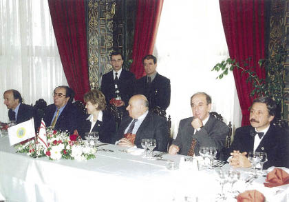

25 Şubat 1996’da İstanbul Üniversitesi’nde, Denktaş’a fahri doktorluk verilmesinin hazırlıklarını yürütüyordum. Bu nedenle Ocak 1996’da, tarih ve merasimin tespiti konularını Denktaş ile görüşüyordum. Bilmeyenlere hatırlatmak için söyleyeyim, Sayın Denktaş’a çeşitli üniversitelerden, çok sayıda fahri doktorluk unvanı verilmiştir. Ankara’daki birçok politikacının da Denktaş’a gösterilen bu sevgi ve liyakati “kıskandığına” eminim.
Denktaş, 25 Şubat 1996 programının görüşmesi sırasında bana şöyle dedi: “Sen bilir misin, kaç fahri doktora bir tane gerçek eder?” Bunu tabii gülerek ve o ince mizah anlayışının içine oturtarak söylüyordu. Onun sözü üzerine ben de güldüm. Aslında o, ne verilen doktorayı küçümsüyordu, ne de kendisinin fazlaca ödüllendirildiğini kastediyordu. Peki, ne demek istiyordu? Bence, sadece ve sadece, içindeki mizah duygusunu dışa yansıtmak için bir bahane arıyordu. İçindeki bu duyguyu açığa çıkarmak için belki de, ciddi, acı ve dikenli hayat yolunda, kendi içindeki sıcaklığı ve yumuşaklığı açığa vuruyordu.

Denktaş İstanbul Üniversitesi’nde
Denktaş yarım yüzyılı aşan bir süre boyunca, Rum, İngiliz, Amerikalı, Rus ve bilmem ne kadar yabancı devlet adamı, Birleşmiş Milletler Genel Sekreteri, Ankara başbakanı ile uluslararası politikanın labirentlerinde satranç oynamış bir insan. Yazdığı eserleri odanıza koyacaksanız yeni bir kitaplık almanız gerekir. Denktaş unvanlarını çoktan almış, heybesi ağzına kadar dolu. Ona “fahri doktora” olsa olsa bir buket çiçek ölçüsünde kalır. Ancak bu çiçeklerden oluşan büyük tarla, Anadolu insanının ona sunduğu bir vefa borcudur.
Türk halkı ona ve Kıbrıs’a verdiği önemi bu çiçek tarlasında gözler önüne sermektedir. Duyguyla, içtenlikle, övgüyle sunulan çiçekler.
Türkiye’de siyasilere, iş adamlarına verilen bu tür unvanlarda “genellikle” bir hesap-kitap vardır, bir beklenti bulunur. Ama Denktaş’a verilenler farklıdır; çünkü Denktaş’a unvan verenler, biraz da kendilerini “onore” ederler.